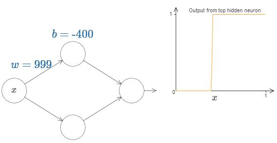
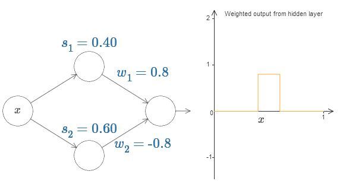

Notes for the book.
Source code for the book.
Chapter 4: A visual proof that neural networks can compute any function
One of the most striking facts about neural networks is that they can compute any function at all.
That is, suppose someone hands you some complicated, wiggly function, $f(x)$:
No matter what the function, there is guaranteed to be a neural network so that for every possible input, $x$, the value $f(x)$ (or some close approximation) is output from the network.
This result holds even if the function has many inputs,
This result tells us that neural networks have a kind of universality. No matter what function we want to compute, we know that there is a neural network which can do the job.
What’s more, this universality theorem holds even if we restrict our networks to have just a single layer intermediate between the input and the output neurons - a so-called single hidden layer. So even very simple network architectures can be extremely powerful.
However, the proofs for the universality of neural networks is not widely understood and the explanations are quite technical. Here we attempt to simplify the underlying intuition.
Any process that we can do or imagine can be thought of as a function computation. Universality means that neural networks can do all these things, and many more.
So, we know neural networks can compute things, but to find those networks we need learning algorithms!!
Two Caveats
to the statement “a neural network can compute any function”.
- Firstly, This does not mean that the network can exactly compute any function. We can get an approximation that is as good as we want by increasing the number of hidden neurons.
- Second, the class of functions that can be approximated in this way are the continous functions. However, the network can still compute a continous approximation of the underlying discontinous function.
Universality with one input and one output
It turns out that this is the core of the problem of universality. Once we’ve understood this special case it’s actually pretty easy to extend to functions with many inputs and many outputs.
Here is an output of a single hidden neuron,
Now, this single neuron can be treated as a step function with given parameters.

Working with this would actually be easier than a general sigmoid function.
With a little bit of work, we can see that the value at which the step occurs is proportional to $b$ and inversely proportional to $w$.
In fact, the step is at position $s = -b/w$.
Now, it will greatly simplify our lives if we describe the hidden neuron by a single parameter $s = -b/w$.
Up to now we’ve been focusing on the output from just the top hidden neuron. Let’s take a look at the behavior of the entire network. In particular, we’ll suppose the hidden neurons are computing step functions parameterized by step points $s_1$ (top neuron) and $s_2$ (bottom neuron). And they’ll have respective output weights $w_1$ and $w_2$.
$weighted,output = w_1a_1 + w_2a_2, $ where $a$s are the activations.
Finally, let’s on playing with the values, we can get a bump function, which starts at $s_1$, ends at $s_2$.

You’ll notice, by the way, that we’re using our neurons in a way that can be thought of not just in graphical terms, but in more conventional programming terms, as a kind of if-then-else statement, e.g.:
if input >= step point:
add 1 to the weighted output
else:
add 0 to the weighted output
Furthur, we can use our bump-making trick to get two bumps, by gluing together pairs of hidden neurons together,
More, generally, we can have $N$ peaks/bumps by using $N$ pairs of hidden neurons.
You may be able to see now where this is going, we are now designing a function by choosing various height values for the intervals.
Going back to the function we saw earlier,
is actually,
$$\begin{align}f(x) = 0.2 + 0.4x^2+0.3x\sin(15x) + 0.05\cos(50x)\end{align}$$
That’s obviously not a trivial function,
n our networks above we’ve been analyzing the weighted combination $\sum_j w_ja_j$ output from the hidden neurons. We now know how to get a lot of control over this quantity. But, as I noted earlier, this quantity is not what’s output from the network. What’s output from the network is $\sigma(\sum_j w_j a_j + b)$ where $b$ is the bias on the output neuron. Is there some way we can achieve control over the actual output from the network?
The solution is to design a neural network whose hidden layer has a weighted output given by $\sigma_{−1}\circ,f(x)$, where $\sigma^{-1}$ is just the inverse of the $\sigma$ function. That is, we want the weighted output from the hidden layer to be:

If we can compute this function, the output from the network would be a good approximation for $f(x)$.
With some work, we can get this, minimizing the average deviation between the goal and the network output.

This is only a coarse approximation, but we can do much better simply by increasing the number of hidden neurons, allowing more bumps.
And, it is possible to convert all the data we found into standard parameterization used for neural networks.
What’s more, there was nothing special about our original goal function $f(x) = 0.2 + 0.4x^2+0.3x\sin(15x) + 0.05\cos(50x)$. We could have used the same procedure for any continuos function from $[0, 1]$ to $[0, 1]$.
Many input variables
We’ll start by considering what happens when we have two inputs to a neuron:
As we can see, with $w_2 = 0$, the input $y$ makes no difference to the output. It’s as though there was only one input $x$.
Now, if you can recall, we are going to create steps,
Changing to a simpler parameter,
Ofcourse, it is possible to create this step in the $y$ direction,
Now we are going to create a 3D bump function,
And, the same can be made in $y$ direction,
Let’s see what happens when we combine the above functions,

This can be tuned to create a tower function,
And the towers can be combined to form,
This, can be expressed as ,
if combined output from hidden neurons >= threshold:
output 1
else:
output 0
The same approach can be extended to higher dimensions(networks with more input variables).
Okay, so we now know how to use neural networks to approximate a real-valued function of many variables. What about vector-valued functions $f(x_1, … ,x_m) \in R^n$? Of course, such a function can be regarded as just $n$ separate real-valued functions, $f_1(x_1, … ,x_m),f_2(x_1,…,x_m)$, and so on. So we create a network approximating $f_1$, another network for $f_2$, and so on. And then we simply glue all the networks together. So that’s also easy to cope with.
Extension beyond sigmoid neurons
We’ve proved that networks made up of sigmoid neurons can compute any function. Recall that in a sigmoid neuron the inputs $x_1,x_2,…$ result in the output $\sigma (\sum_j w_j x_j + b)$, where $w_j$ are the weights, $b$ is the bias, and $\sigma$ is the sigmoid function:
What if we consider a different type of neuron, one using some other activation function $s(x)$:

This can still produce a step function given appropriate weights,
So, what properties does $s(z)$ need to assume that this works. We need to assume that $s(z)$ is well-defined as $z \to -\infty$ and $z \to \infty$. These two limits are the two values taken on by our step function. We also need to assume that these two limits are different from one another. If they weren’t, there would be no step, simple a flat graph!
Fixing up the step function
Upto this point, we have made some pretty good approximations of the function, but it is only an approximation. There would be a narrow window of failure.
Now, these are not terrible failures, we can make the weights of input neurons big enough to make this window smaller.
Again, let’s assume we want to approximate a function $f$. We would try to design pur network so that the
weighted output from our hidden layer of neurons is $\sigma^{-1} \circ f(x)$:
Using the technique described earlier, we would use hidden neurons to produce a sequence of bumps like this :
Now, suppose we build another set of hidden neurons to compute the approximation of $\sigma^{-1} \circ f(x)$, but with the bases of the bumps shifted by half the width of the bump:
Now, if we combine the two approximations, the overall approximation will still have windows of failure, but these windows would be still smaller. Further, the approximation will be 2 times better in those windows.
We can do even better by combining a large number of overlapping approximations.
Conclusion
The above discussion and proof of universality is certainly very crude, however it provides a good intuition.
So, this takes off the table the question of whether any particular function is computable using a neural network. The answer is always yes. The right question to ask is, what’s a good way to compute the function.